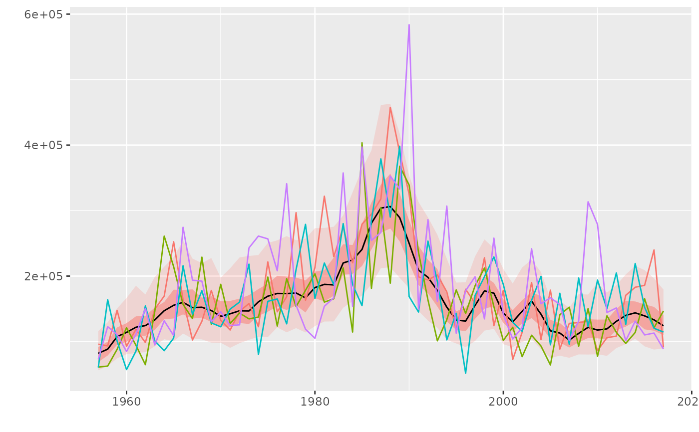
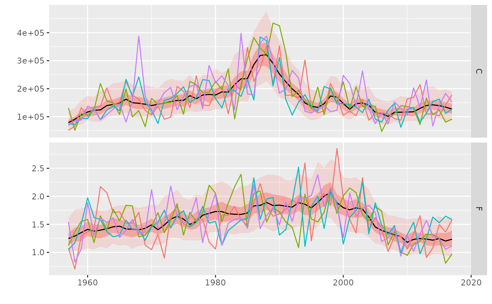

R/geom.R
geom_worm.RdA geom for adding worms to probability intervals from geom_flquantiles
geom_worm( data, mapping = aes(colour = iter), ..., stat = "identity", position = "identity", na.rm = FALSE )
| data | Subset of data, select from full object using iter(). |
|---|---|
| mapping | Set of aesthetic mappings created by |
| ... | Other arguments passed on to |
| stat | The statistical transformation to use on the data for this layer, as a string. |
| position | Position adjustment, either as a string, or the result of a call to a position adjustment function. |
| na.rm | If |
`geom_worm` understands the following aesthetics (required aesthetics are in bold): - `colour` - `linetype` - `size`
x <- FLQuants(C=rlnorm(200, log(catch(ple4)), 0.3), F=rlnorm(200, fbar(ple4), 0.2)) plot(x) + geom_worm(data=iter(x, 1:4))